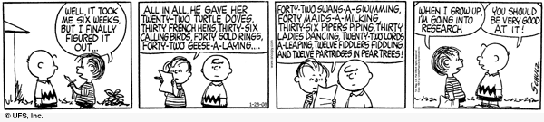

matthias beck
professor of mathematics

|
MATH 420/720 Combinatorics Spring 2025 |
 |
| Lecture | MWF 1:00-1:50 p.m. TH 211 |
| Prerequisites | MATH 301GW; CSC 230 or MATH 310 or MATH 325; all with grades of C or better; GPA of 3.0 or higher; or permission of the instructor |
| Instructor | Dr. Matthias Beck |
| Office | Creative Arts 32 |
| Office hours | Mondays 11-12, Wednesdays 2-3, Fridays 12-1, by appointment, and via zoom |
Course objectives. Math 420/720 gives an introduction to fundamental combinatorial objects, their uses in other fields of mathematics and its applications, and their analysis. We will learn how to use combinatorial structures to represent mathematical and applied questions and will become comfortable with the combinatorial tools commonly used to analyze such structures. Given a hypothetical combinatorial object that must satisfy certain properties, we will learn how to prove the existence or non-existence of the object, compute the number of such objects, and understand their underlying structure.
Textbook. Bruce Sagan, Combinatorics: The Art of Counting, American Mathematical Society (2020).
The math. The way to learn math is through doing math. One doesn't become a good piano player by listening to good music, and one doesn't learn how to shoot free throws by watching basketball games. Similarly, you don't learn mathematics by watching someone else do mathematics. You will be doing a lot of the math in this course. It is vital and expected that you attend every class meeting. You will get a good feel for the math from there, but it is even more crucial that you do the homework. Working in groups is not only allowed but strongly recommended.
Axioms & first principles. Our class is based on Federico Ardila's Axioms:
Homework. I will assign homework problems as we go through the material. You may (and should) work together with your class mates. You may not search the internet for solutions to problems; we will use our creativity, course texts, and peer collaboration as our tools. We can discuss the homework problems at any time during class, and you can hand in (or bring to my office hours) any of your solutions for feedback. We will have a homework quiz every Wednesday at the beginning of class, in which you will be asked one definition and one problem given in the previous week. We will have three cumulative quizzes, on the following Wednesdays:
Grading system.
| Homework quizzes | 25% |
| Cumulative quizzes | 15% each |
| Final Exam (19 May, 12:30-2:30 p.m.) | 30% |
I want to ensure that each of you accomplishes the goals of this course as comfortably and successfully as possible. At any time you feel overwhelmed or lost, please come and talk with me.
Fine print.
SFSU academic calender
BS rule
Academic integrity and plagiarism
Tutoring
CR/NCR grading
Incomplete grades
Late and retroactive withdrawals
Student disclosures of sexual violence
Students with disabilities
Religious holidays
This syllabus is subject to change. All assignments, as well as other announcements on tests, policies, etc., are given in class. If you miss a class, it is your responsibility to find out what's going on. I will try to keep this course web page as updated as possible, however, the most recent information will always be given in class. Always ask lots of questions in class; my courses are interactive. You are always encouraged to see me in my office.
department of mathematics
san francisco state university
1600
holloway ave
san francisco, ca 94132
becksfsu | @ | gmail.com |
"Combinatorics is not a science, it is an attitude."
anon
 all materials on my websites are licensed under a creative commons attribution-noncommercial 3.0 unported license, unless otherwise noted.
all materials on my websites are licensed under a creative commons attribution-noncommercial 3.0 unported license, unless otherwise noted.